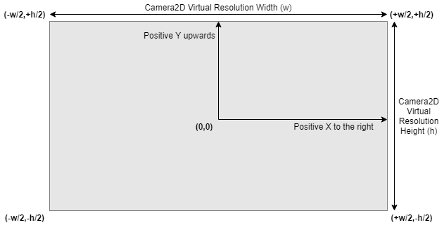
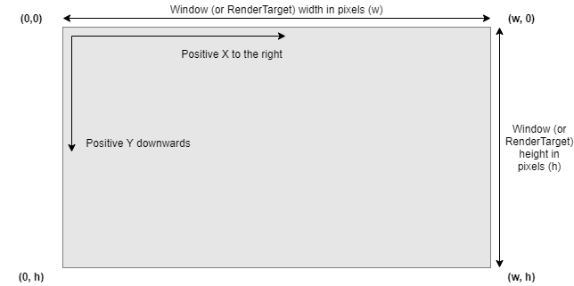
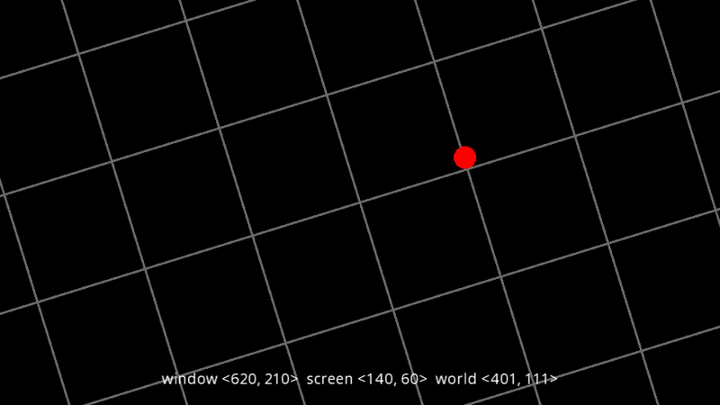

Coordinate systems
Every position you give yak2D is in one of three coordinate systems, or spaces. Two of them are for drawing, and one is the window's own pixel grid. This page explains each, how a camera connects them, and how to convert between them (for example, to find what the mouse is pointing at).
The three spaces at a glance
| Space | Origin (0,0) | +X | +Y | Units | Use it for |
|---|---|---|---|---|---|
| World | a fixed point in your game world | right | up | world units | the game world: it moves, zooms and rotates with the camera |
| Screen | the centre of the camera's view | right | up | the camera's virtual resolution | HUDs, menus, overlays: fixed to the view |
| Window | the top-left corner of the window | right | down | real pixels | the mouse position, and viewports |
Draw requests choose World or Screen with their CoordinateSpace. Window space is never used for drawing.
Virtual resolution: why the window size doesn't matter
Draw stages are rendered through a 2D camera, and each camera has a virtual resolution, for example 960 x 540. That is how many units the camera shows across and down, whatever the real size of the window or render target it renders onto.
A render stage's output always fills its whole render area: the entire render target, or the part of it set by a viewport. So a 960 x 540 camera rendering onto a 1920 x 1080 window draws everything at twice the size, and onto a 640 x 360 render target at two thirds. You design your game once, in the camera's units, and it fits any display.
Important
If the render area's shape (aspect ratio) differs from the camera's virtual resolution, the picture is stretched or squashed to fit. Keep them in the same proportion. See Cameras: Virtual resolution.
Screen space

Draw with CoordinateSpace.Screen for things fixed to the view. The origin is the centre of the camera's view, +x is right and +y is up. The camera's position, zoom and rotation have no effect.
For a camera with virtual resolution w x h, the visible area is:
-w/2 <= x < w/2-h/2 <= y < h/2
So for a 960 x 540 camera, the left and right edges are at x = -480 and 480, and the top and bottom at y = 270 and -270. A score in the top-right corner might go at (460, 250). The HUD recipe shows this in practice.
World space
Draw with CoordinateSpace.World for everything that is part of the game world. The axes are the same as screen space (+x right, +y up), but what is visible depends on the camera:
- Focus: the world position at the centre of the view.
- Zoom: the view shows
w / zoombyh / zoomworld units. A zoom of 2 shows half as much, twice as big. - Rotation: the view is turned clockwise by the camera's angle, in radians.
With the focus at (0,0), a zoom of 1 and no rotation, world space and screen space line up exactly. Move the camera with SetCamera2DFocusZoomAndRotation() and its relatives; see Cameras.
Tip
Both world and screen space put +y up, like a maths graph, so jumping means adding to y and gravity subtracts from it. Window space is the odd one out.
Window space

Window space is the real pixel grid of the window (or of a render target). The origin is the top-left corner, +x is right and +y is down. Units are whole pixels, and the visible pixels are:
0 <= x < width0 <= y < height
Two things use window space:
- The mouse. IInput.MousePosition is in window pixels. Convert it to world or screen space before comparing it with anything you drew.
- Viewports. CreateViewport(x, y, width, height) takes the top-left corner and size of a rectangle of the target, in pixels. See Viewports.
Converting between spaces
ICoordinateTransforms converts positions between the three spaces for a given camera. It is available as the transforms parameter of Drawing(), and as yak.Helpers.CoordinateTransforms everywhere else.
| Method | Converts |
|---|---|
| WorldFromScreen, ScreenFromWorld | between world and screen space |
| WorldFromWindow, ScreenFromWindow | from a window position (such as the mouse) into world or screen space |
| WindowFromWorld, WindowFromScreen | from world or screen space to a window position |
Methods involving window space take an optional viewport, for when the camera is rendered into part of the window, and return a TransformResult: the converted Position, plus Contained, which says whether the point is actually inside the camera's view (or, converting to window space, inside the window).
A common use is finding what the mouse is pointing at in the game world. Here the camera is zoomed and rotated, and clicks still land exactly under the pointer:

public override bool Update(IServices yak, float secondsSinceLastUpdate)
{
var input = yak.Input;
if (input.WasMousePressedThisFrame(MouseButton.Left))
{
// Mouse positions are window pixels from the top-left. Convert to the camera's world space
var world = yak.Helpers.CoordinateTransforms.WorldFromWindow(input.MousePosition, _camera);
if (world.Contained)
{
_placed.Add(world.Position);
}
}
return base.Update(yak, secondsSinceLastUpdate);
}
public override void Drawing(IDrawing draw, IFps fps, IInput input, ICoordinateTransforms transforms,
float secondsSinceLastDraw, float secondsSinceLastUpdate)
{
// A world space grid, seen through a zoomed and rotated camera
for (var n = -10; n <= 10; n++)
{
draw.Helpers.DrawLine(_drawStage, CoordinateSpace.World, new Vector2(n * 100.0f, -1000.0f), new Vector2(n * 100.0f, 1000.0f), 2.0f, Colour.DimGray, 0.9f);
draw.Helpers.DrawLine(_drawStage, CoordinateSpace.World, new Vector2(-1000.0f, n * 100.0f), new Vector2(1000.0f, n * 100.0f), 2.0f, Colour.DimGray, 0.9f);
}
foreach (var p in _placed)
{
draw.Helpers.DrawColouredPoly(_drawStage, CoordinateSpace.World, Colour.Gold, p, 5, 14.0f, 0.5f);
}
// The cursor, in world space and screen space
var world = transforms.WorldFromWindow(input.MousePosition, _camera);
var screen = transforms.ScreenFromWindow(input.MousePosition, _camera);
if (world.Contained)
{
draw.Helpers.DrawColouredPoly(_drawStage, CoordinateSpace.World, Colour.Red, world.Position, 32, 10.0f, 0.4f);
draw.DrawString(_drawStage, CoordinateSpace.Screen,
$"window {input.MousePosition:0} screen {screen.Position:0} world {world.Position:0}",
Colour.White, 20.0f, new Vector2(0.0f, -230.0f), TextJustify.Centre, 0.3f, 1);
}
}
The conversions take the camera's focus, zoom, rotation and virtual resolution into account, and the window's current size, so they keep working when the window is resized.
Texture coordinates
Texture coordinates pick a point on a texture, from (0,0) at the top-left to (1,1) at the bottom-right, whatever the texture's size in pixels. Values outside 0 to 1 repeat or mirror the texture, depending on the TextureCoordinateMode. See Drawing: Texture coordinates.
The top-left origin is the same on every graphics API. Shaders for custom shader stages can assume it too: the vertex shader yak2D supplies already accounts for OpenGL's differences. In custom Veldrid stages you write all the GPU code yourself, so the differences between APIs are yours to handle.
3D rendering
The mesh render stage uses a 3D camera for its view and projection. yak2D's 3D space is right-handed, the same on every graphics API: +x to the right, +y up, and +z out of the screen, towards the viewer. As with texture coordinates, custom Veldrid stages must handle any differences between graphics APIs themselves.